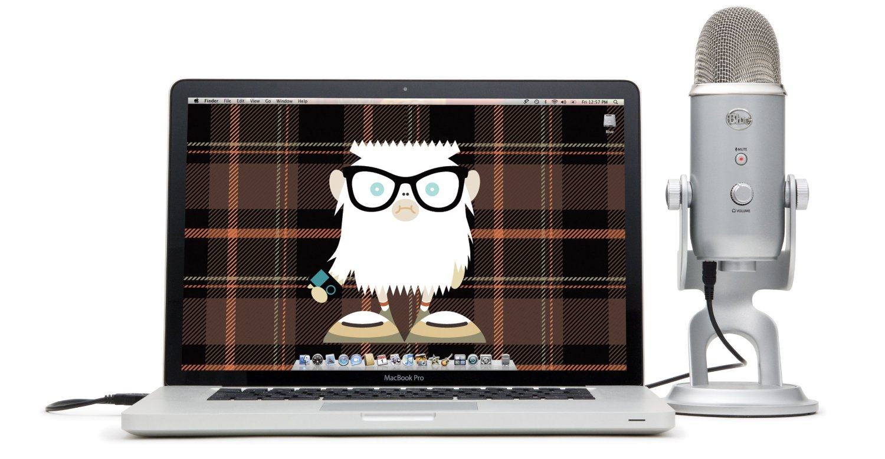

yet•i
[yet-ee] - noun
- Legendary ape-like creature who roams the Himalayas.
See: ABOMINABLE SNOWMAN - An incredibly versatile USB microphone found worldwide.
Synonyms: AMAZING VOCALS, MUSIC, PODCASTS, VOICEOVERS, INTERVIEWS, CONFERENCE CALLS, FIELD RECORDINGS AND MUCH, MUCH MORE